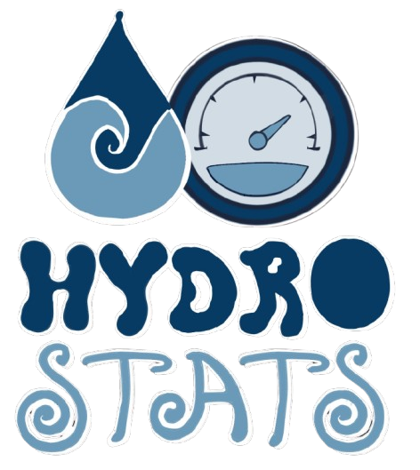

Consumo diário
Veja quantos litros foram usados por dia, semana ou mês.
Acompanhe seu consumo de água e descubra oportunidades para usar melhor esse recurso todos os dias.

Informações simples para acompanhar o uso e tomar decisões melhores.
Veja quantos litros foram usados por dia, semana ou mês.
Acompanhe os momentos de maior consumo durante o dia.
Registre pH, turbidez e temperatura e acompanhe os valores.
Identifique aumentos inesperados no consumo.
Acompanhe seus dados e construa hábitos mais conscientes.